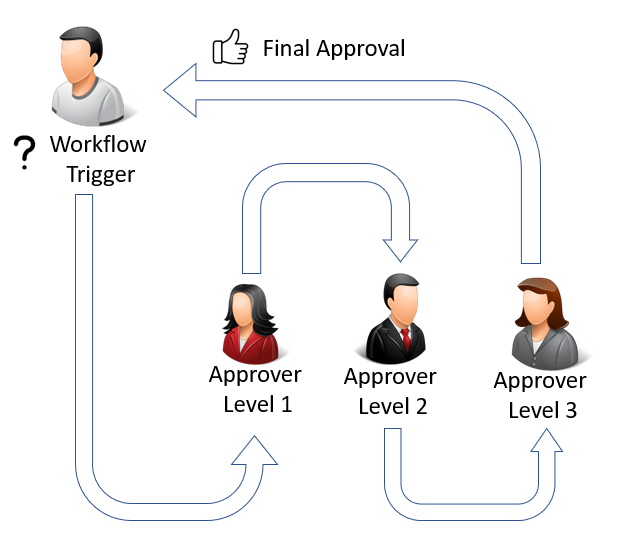
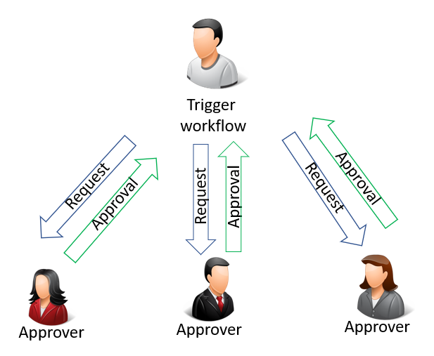
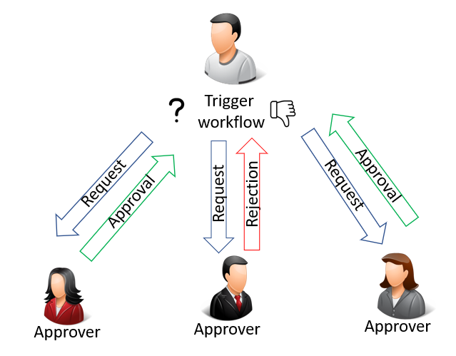

Artikelgenehmigungsworkflow verwenden
Ein Workflow ist eine Sequenz von Aufgaben, die durch eine Aktion, eine Bedingung oder eine Regel ausgelöst wird. Workflows werden in der Regel implementiert, um Geschäftslogik in eine Organisation zu integrieren, wie z. B. die Trennung von Aufgaben, die Vereinheitlichung von Prozessen oder die Anwendung von bewährten Verfahren.
Die Workflows können so konzipiert werden, dass sie Anfragen zur Genehmigung eines Datensatzwertes erstellen, während der alte Wert beibehalten wird, falls die Anfrage nicht genehmigt wird. Der neue Wert wird erst dann implementiert, wenn die letzte Anforderung genehmigt ist.
Die Geschäftslogik könnte die Genehmigung von sein:
- Neue Stammdaten wie Sachposten, Sachkonten, Debitoren, Kreditor oder Artikel.
- Änderungen an Feldern in bestehenden Datensätzen, die sensible Informationen enthalten, wie z. B. Kreditor Bankkontonr. oder Kunde Kreditlimit.
- Änderungen an Feldern in bestehenden Datensätzen, die geschäftskritische Informationen enthalten, z.B. Artikel VK-Preise.
- Neue Benutzer oder Änderungen an Benutzerberechtigungen.
- Kaufbelege.
- Verkaufsbelege.
- Eingehende Belege.
- Finance Erfassungen vor der Buchung.
Die folgende Abbildung ist ein Beispiel für einen Workflow mit sequentieller Genehmigung, ausgelöst durch einen Benutzer. Durch das Auslösen des Workflows wird ein Genehmigungsantrag für den ersten Genehmiger erstellt.

In diesem Beispiel muss die Anfrage vom ersten Genehmiger genehmigt werden, bevor die Anfrage an den nächsten weitergeleitet wird. Wenn die Anfrage nicht vom ersten Genehmiger genehmigt wird, wird die Anfrage nie an den nächsten weitergeleitet.
Der Arbeitsplan ab dem ersten Auslösen des Workflows kann je nach Art der Genehmigung variieren.
Die folgende Abbildung zeigt eine parallele Genehmigung, die durch den Benutzer ausgelöst wird. Eine parallele Genehmigung bedeutet, dass der Genehmigungsantrag an alle Genehmiger gleichzeitig gesendet.

Der Workflow ist jedoch erst dann genehmigt, wenn alle Anträge genehmigt wurden, wie in der folgenden Abbildung dargestellt:

Hinweis
Bei einem Workflow mit mehreren Genehmigern müssen alle Genehmiger jeden Schritt genehmigen, bevor der Workflow mit dem nächsten Ereignis fortfahren kann. Die Genehmigung von nur einem Genehmiger bringt den Workflow nicht voran.
Sie können Workflows festlegen und verwenden, die von verschiedenen Benutzern ausgeführte Geschäftsprozessaufgaben miteinander verbinden. Es ist auch möglich, denselben Workflow mehr als einmal zu erstellen. Jeder Workflow kann durch ein Ereignis mit unterschiedlichen Filtern ausgelöst werden. Dies ist nützlich, wenn eine Genehmigungsanfrage für eine Abteilung von einem Genehmiger genehmigt werden muss, während Genehmigungsanfragen in anderen Abteilungen von einem anderen Genehmiger genehmigt werden müssen. Systemaufgaben, wie automatische Buchung, können als Schritte in Workflows berücksichtigt werden, vor oder nach Benutzeraufgaben. Die Anforderung oder Bewilligung von Genehmigungen zum Erstellen neuer Datensätze sind typische Workflowschritte.
Bevor Sie beginnen können, Workflows zu verwenden, müssen Sie Workflowbenutzer einrichten, die Workflows erstellen, (möglicherweise Codeanpassung berücksichtigen) und angeben, wie Benutzer Benachrichtigungen empfangen sollen. Erfahren Sie mehr unter Workflows einrichten.
Hinweis
Typische Workflowschritte enthalten Benutzer, die Genehmigungen für Aufgaben anfordern, und Genehmiger, die Genehmigungsanforderungen annehmen oder ablehen. Daher beschäftigen sich viele Themen in Bezug auf die Verwendung von Workflows mit Genehmigungen.
Die folgende Tabelle beschreibt eine Reihe von Aufgaben mit Links zu den Artikeln, die sie beschreiben.
| Prozess | Siehe |
|---|---|
| Richten Sie einen Genehmigungsworkflow ein, der gestartet wird, wenn das erste Einstiegspunktereignis auftritt. | Genehmigungsworkflow aktivieren |
| Anforderung der Genehmigung einer Aufgabe: Akzeptieren oder Delegieren von Genehmigungen oder Ablehnen von Genehmigungen; Senden oder Anzeigen von Genehmigungsbenachrichtigungen. | So verwenden Sie Genehmigungsworkflows |
| Erstellen Sie Workflowschritte, die einen bestimmten Datensatztyp für die Verwendung vor einem bestimmten Ereignis einschränken (beispielsweise, Genehmigung eines Datensatzes). | Zulassen und Einschränken des Verbrauchs eines Datensatzes |
| Zeigen Sie Workflowschrittinstanzen mit dem Status Abgeschlossen an. | Archivierte Workflowschritt-Instanzen anzeigen |
| Löschen Sie einen Genehmigungsworkflow, den Sie mit Gewissheit nicht mehr verwenden werden. | Genehmigungsworkflows löschen |
Siehe auch
Genehmigungsworkflows einrichten
Workflow
Arbeiten mit Business Central
Kostenlose E-Learning-Module für Business Central finden Sie hier